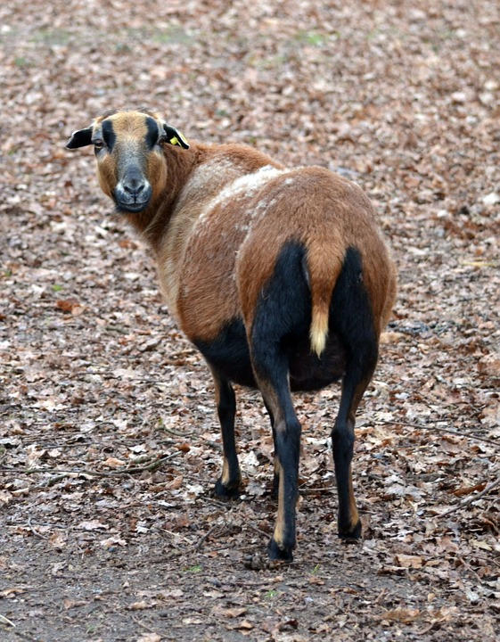

Kamerun
Kamerun ist ein Land in Zentralafrika und grenzt an
- folgende Länder:
- Nigeria
- Tschad
- Zentralafrikanische Republik
- Republik Kongo
- Gabun
- Äquatorialguinea
- folgende Gewässer:
- Atlantischer Ozean
- Golf von Guinea
 Karte von Kamerun (Quelle: welt-atlas.de)
Karte von Kamerun (Quelle: welt-atlas.de)
Das Kamerunschaf

Kamerunschaf
Reisehinweise
Reisewarnungen finden Sie auf der Seite des .
Überzeugen Sie sich selbst von den wunderschönen Landschaften (Bild ist verlinkt):
 Landschaft Quelle:http://oasereisen.de/media/oase/images/300_Maroua.jpg
Landschaft Quelle:http://oasereisen.de/media/oase/images/300_Maroua.jpg